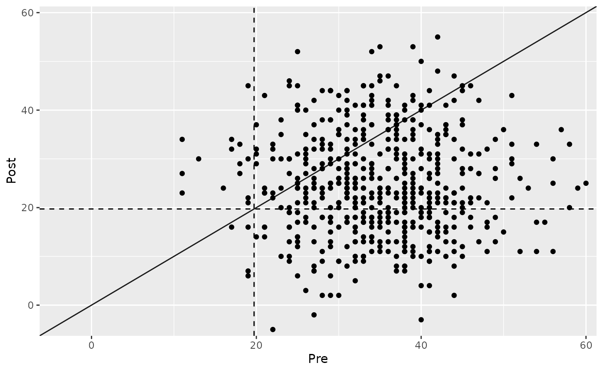
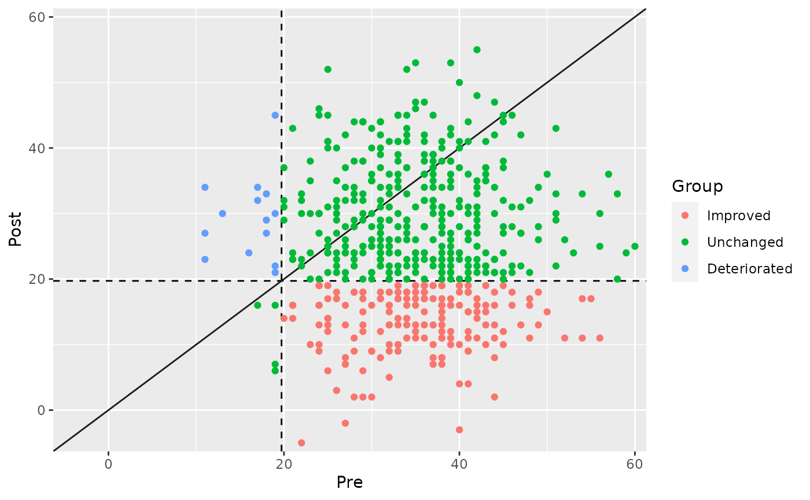
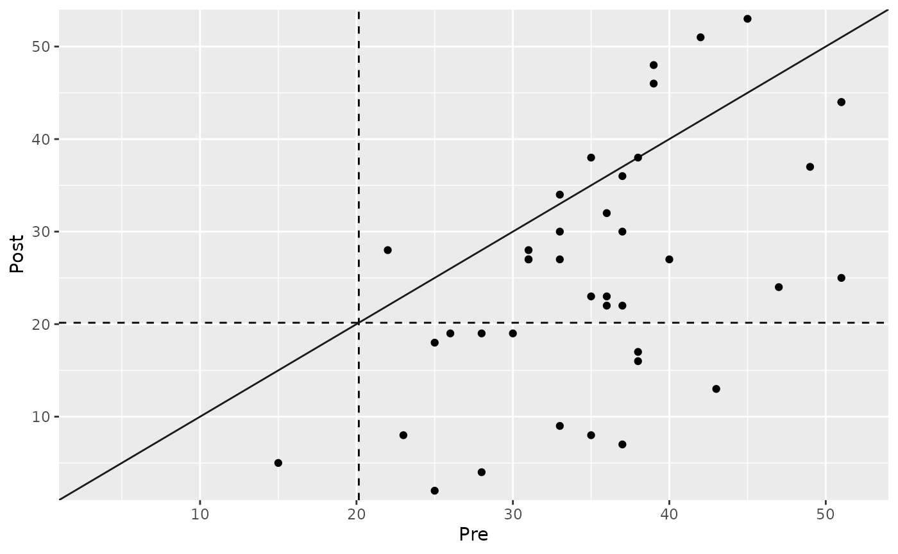
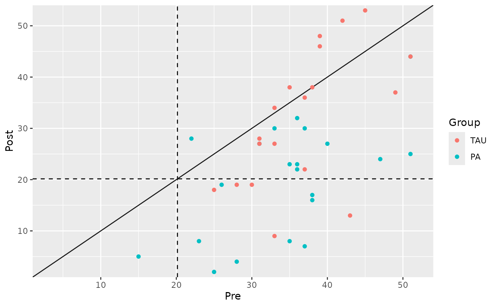

Introduction
In this tutorial, we will explore the statistical approach to
clinical significance using R. The statistical approach is based on the
assumption that patients and healthy individuals form two distinct
distributions on the same continuum. A clinical significant change is
believed to have occurred, if a patients, that belonged to the clinical
population before an intervention belongs to the functional/non-clinical
population after that intervention. For this, a cutoff between the two
distributions can be calculated, which needs to be crossed to fulfill
this population change criterion. We will be working with the
antidepressants and the claus_2020 datasets,
and the cs_statistical() function to demonstrate various
aspects of this approach.
Prerequisites
Before we begin, ensure that you have the following prerequisites in place:
- R installed on your computer.
- Basic understanding of R programming concepts.
Looking at the Datasets
First, let’s have a look at the datasets, which come with the package.
library(clinicalsignificance)
antidepressants
#> # A tibble: 1,110 × 4
#> patient condition measurement mom_di
#> <chr> <fct> <fct> <dbl>
#> 1 S001 Wait List Before 50
#> 2 S001 Wait List After 36
#> 3 S002 Wait List Before 40
#> 4 S002 Wait List After 32
#> 5 S003 Wait List Before 38
#> 6 S003 Wait List After 41
#> 7 S004 Wait List Before 29
#> 8 S004 Wait List After 44
#> 9 S005 Wait List Before 37
#> 10 S005 Wait List After 45
#> # ℹ 1,100 more rows
claus_2020
#> # A tibble: 172 × 9
#> id age sex treatment time bdi shaps who hamd
#> <dbl> <dbl> <fct> <fct> <dbl> <dbl> <dbl> <dbl> <dbl>
#> 1 1 54 Male TAU 1 33 9 0 25
#> 2 1 54 Male TAU 2 28 6 3 17
#> 3 1 54 Male TAU 3 28 9 7 13
#> 4 1 54 Male TAU 4 27 8 3 13
#> 5 2 52 Female PA 1 26 11 2 15
#> 6 2 52 Female PA 2 26 10 0 16
#> 7 2 52 Female PA 3 25 10 0 7
#> 8 2 52 Female PA 4 19 9 3 11
#> 9 3 54 Male PA 1 15 2 0 28
#> 10 3 54 Male PA 2 13 5 9 17
#> # ℹ 162 more rowsStatistical Approach
The cs_statistical() function is a tool for assessing
clinical significance. It allows you to determine if changes in patient
outcomes are practically significant. Let’s go through the basic usage
and some advanced features of this function.
Basic Analysis
Let’s start with a basic statistical clinical significance analysis
using the antidepressants dataset. We are interested in the
Mind over Mood Depression Inventory (mom_di) measurements.
For the statistical approach, a functional population must be defined.
Suppose, we collected data from a non-clinical sample and determined a
mean of 7 points and a standard deviation of also 7 points.
stat_results <- antidepressants |>
cs_statistical(
id = patient,
time = measurement,
outcome = mom_di,
m_functional = 7,
sd_functional = 7,
cutoff_type = "c"
)
#> ℹ Your "Before" was set as pre measurement and and your "After" as post.
#> • If that is not correct, please specify the pre measurement with the argument
#> "pre".Handling Warnings
Sometimes, as in the example above, you may encounter warnings when using this function. You can turn off the warning by explicitly specifying the pre-measurement time point using the pre parameter. This can be helpful when your data lacks clear pre-post measurement labels.
# Turning off the warning by specifying pre-measurement time
stat_results <- antidepressants |>
cs_statistical(
id = patient,
time = measurement,
outcome = mom_di,
pre = "Before",
m_functional = 7,
sd_functional = 7,
cutoff_type = "c"
)Here’s a breakdown of the code:
-
patient,measurement, andmom_direpresent the patient identifier, assessment time points, and HAM-D scores, respectively. -
preandpostspecify the time points for the pre and post-assessment. -
m_functionalandsd_functionaldefine the functional population’s mean and standard deviation. This information is used to calculate the population cutoff. -
"c"specifies the population cutoff of choice.
Printing and Summarizing the Results
# Print the results
stat_results
#>
#> ── Clinical Significance Results ──
#>
#> Statistical approach using the JT method.
#> Category | n | Percent
#> ----------------------------
#> Improved | 173 | 31.17%
#> Unchanged | 368 | 66.31%
#> Deteriorated | 14 | 2.52%
# Get a summary
summary(stat_results)
#>
#> ── Clinical Significance Results ──
#>
#> Statistical approach of clinical significance using the JT method for
#> calculating the population cutoff.
#> There were 555 participants in the whole dataset of which 555 (100%) could be
#> included in the analysis.
#> The cutoff type was c with a value of 19.72 based on the following sumamry
#> statistics:
#>
#> ── Population Characteristics
#> M Clinical | SD Clinical | M Functional | SD Functional
#> -------------------------------------------------------
#> 34.73 | 8.26 | 7 | 7
#>
#> ── Individual Level Results
#> Category | n | Percent
#> ----------------------------
#> Improved | 173 | 31.17%
#> Unchanged | 368 | 66.31%
#> Deteriorated | 14 | 2.52%Visualizing the Results
Visualizing the results can help you better understand the clinical significance of changes in patient outcomes.
# Plot the results
plot(stat_results)
# Show clinical significance categories
plot(stat_results, show = category)
Data with More Than Two Measurements
When working with data that has more than two measurements, you must
explicitly define the pre and post measurement time points using the
pre and post parameters.
# Clinical significance distribution analysis with more than two measurements
cs_results <- claus_2020 |>
cs_statistical(
id = id,
time = time,
outcome = bdi,
pre = 1,
post = 4,
m_functional = 7,
sd_functional = 7,
cutoff_type = "c"
)
# Display the results
cs_results
#>
#> ── Clinical Significance Results ──
#>
#> Statistical approach using the JT method.
#> Category | n | Percent
#> ---------------------------
#> Improved | 13 | 32.50%
#> Unchanged | 27 | 67.50%
#> Deteriorated | 0 | 0.00%
summary(cs_results)
#>
#> ── Clinical Significance Results ──
#>
#> Statistical approach of clinical significance using the JT method for
#> calculating the population cutoff.
#> There were 43 participants in the whole dataset of which 40 (93%) could be
#> included in the analysis.
#> The cutoff type was c with a value of 20.15 based on the following sumamry
#> statistics:
#>
#> ── Population Characteristics
#> M Clinical | SD Clinical | M Functional | SD Functional
#> -------------------------------------------------------
#> 35.48 | 8.16 | 7 | 7
#>
#> ── Individual Level Results
#> Category | n | Percent
#> ---------------------------
#> Improved | 13 | 32.50%
#> Unchanged | 27 | 67.50%
#> Deteriorated | 0 | 0.00%
plot(cs_results)
Grouped Analysis
You can also perform a grouped analysis by providing a group column from the data. This is useful when comparing treatment groups or other categories.
cs_results_grouped <- claus_2020 |>
cs_statistical(
id = id,
time = time,
outcome = bdi,
pre = 1,
post = 4,
m_functional = 7,
sd_functional = 7,
cutoff_type = "c",
group = treatment
)
# Display and visualize the results
cs_results_grouped
#>
#> ── Clinical Significance Results ──
#>
#> Statistical approach using the JT method.
#> Group | Category | n | Percent
#> -----------------------------------
#> TAU | Improved | 5 | 12.50%
#> TAU | Unchanged | 14 | 35.00%
#> TAU | Deteriorated | 0 | 0.00%
#> PA | Improved | 8 | 20.00%
#> PA | Unchanged | 13 | 32.50%
#> PA | Deteriorated | 0 | 0.00%
plot(cs_results_grouped)
Analyzing Positive Outcomes
In some cases, higher values of an outcome may be considered better.
You can specify this using the better_is argument. Let’s
see an example with the WHO-5 score where higher values are considered
better.
# Clinical significance analysis for outcomes where higher values are better
cs_results_who <- claus_2020 |>
cs_statistical(
id,
time,
who,
pre = 1,
post = 4,
m_functional = 7,
sd_functional = 7,
cutoff_type = "c",
better_is = "higher"
)
# Display the results
cs_results_who
#>
#> ── Clinical Significance Results ──
#>
#> Statistical approach using the JT method.
#> Category | n | Percent
#> ---------------------------
#> Improved | 21 | 52.50%
#> Unchanged | 17 | 42.50%
#> Deteriorated | 2 | 5.00%Conclusion
In this tutorial, you’ve learned how to perform clinical significance
analysis using the cs_statistical() function in R. This
analysis may be crucial for determining the practical importance of
changes in patient outcomes. By adjusting thresholds and considering
grouped analyses, you can gain valuable insights for healthcare and
clinical research applications.